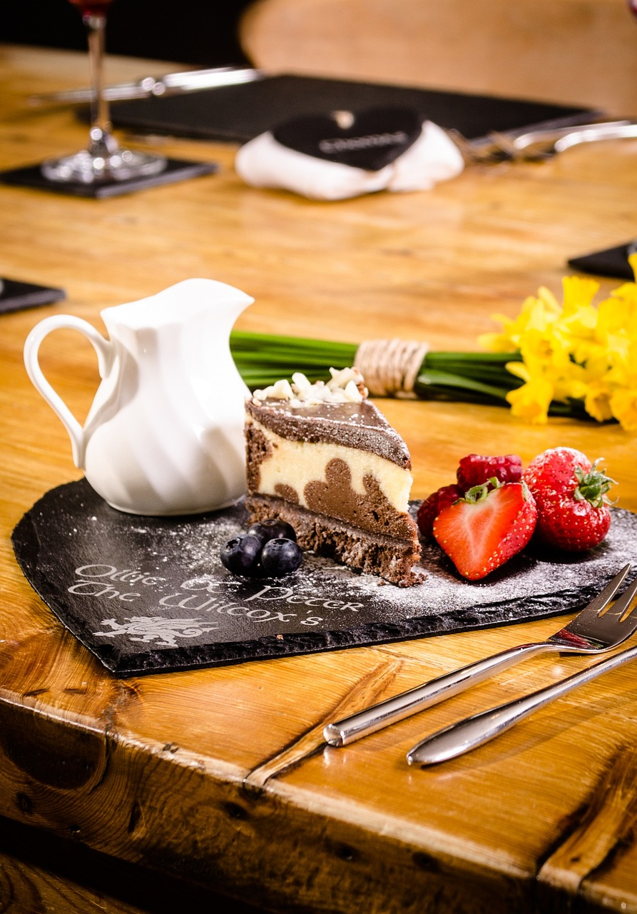

Dining
There are some dining experiences that you simply never forget and Simpson’s Forest is sure to be one of them. Only the best and freshest available seasonal ingredients are used and guests are encouraged to discuss meal preferences. The chef and his experienced team await to tantalise your taste buds with exciting, off-the-menu Sri Lankan and international creations.
The Simpson’s Forest restaurant is uniquely situated to allow guests to appreciate and savour the impressive views of the plantation and distant mountains as they delight in the chef’s sublime creations.


